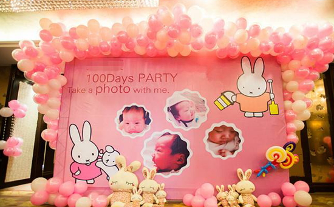
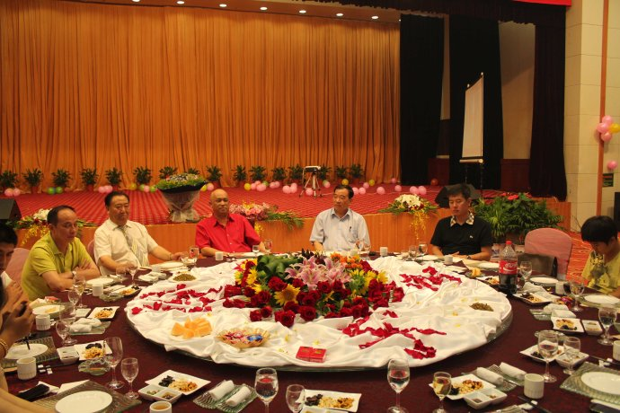
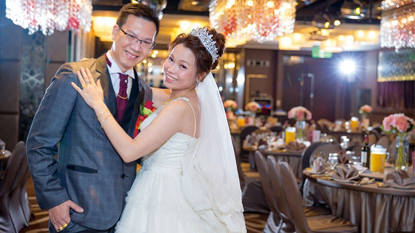
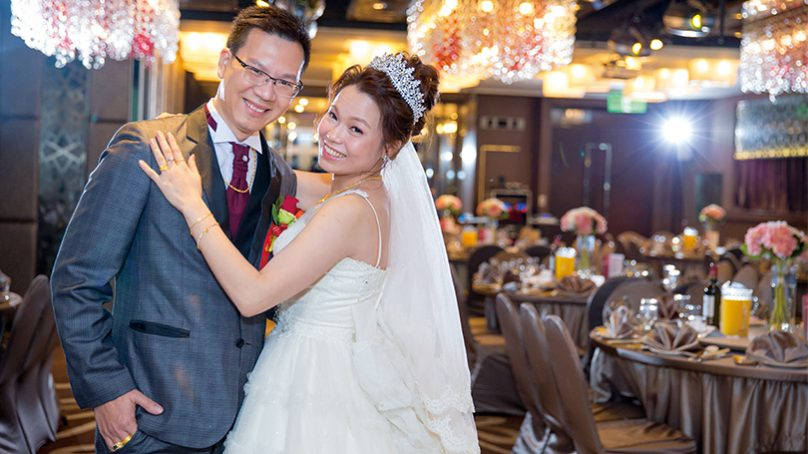
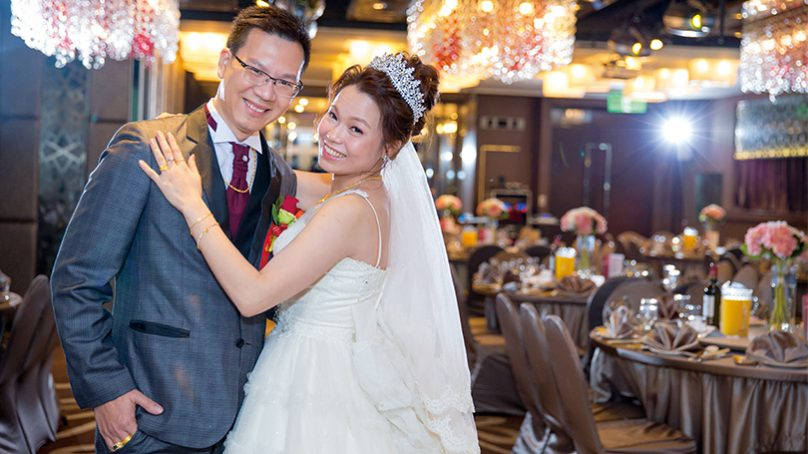

 

滿月宴: 一定要使用全雞，祝願孩子十全十美；還會有八寶油飯，表示孩子一生將不愁吃穿；通常會以蛋糕收尾，慶祝孩子滿月
生日宴: 會以壽桃做收尾。
新居宴: 通常也會有一道白斬雞，取其「孵錢」與「起家」之意。收尾以蛋糕或點心，代表遷入新居後，事事圓滿如意。
婚宴: 上會有一道禮餅及甜湯做收尾，象徵婚姻圓滿，甜甜蜜蜜，但是在喪宴上就不會出現這些菜色。
連到第3頁
連到第4頁
連到第1頁
連到第5頁
 
